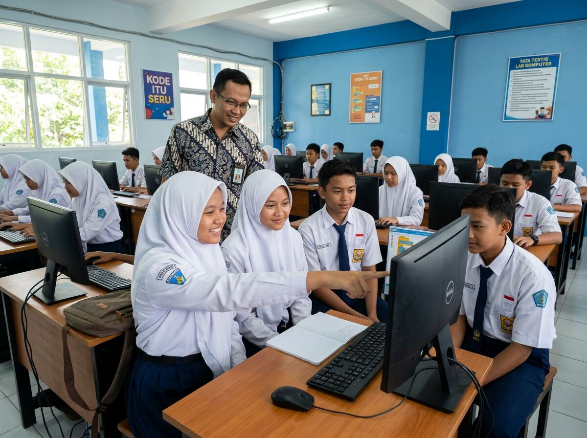

Putih – Biru
Senin & KamisKemeja putih berkerah dengan atribut sekolah dan rok/celana navy. Dipakai untuk upacara bendera dan kegiatan belajar.
Program akademik, pembinaan karakter, ekstrakurikuler, dan aturan seragam yang membentuk budaya sekolah.

Pembelajaran IPA dan matematika diarahkan pada pemahaman konsep, bukan sekadar hafalan. Siswa melakukan praktikum dan pengamatan sederhana secara rutin.
Literasi dibangun melalui kebiasaan membaca, menulis, dan mempresentasikan hasil kerja. Siswa dilatih menyusun laporan pengamatan sederhana sejak kelas VII.


Seluruh siswa mengenal dasar-dasar teknologi informasi, keamanan digital, dan pembuatan konten sederhana yang bertanggung jawab.
Seragam resmi SMP Labschool UNTAD mengikuti foto siswa: kemeja putih dengan rok/celana biru, serta batik bercorak kotak khas sekolah. Berikut aturan pemakaian seragam selama hari efektif, Senin sampai Jumat.
Kemeja putih berkerah dengan atribut sekolah dan rok/celana navy. Dipakai untuk upacara bendera dan kegiatan belajar.
Kemeja putih dipadukan rompi/rok batik bercorak kotak cokelat dengan emblem sekolah — seragam kebanggaan yang terlihat pada foto resmi siswa.
Seragam pramuka cokelat lengkap dengan setangan leher merah-putih, dipakai pada hari pembinaan kepramukaan.
Pakaian menyesuaikan jadwal kegiatan OSIS pekan itu: Pensi (pentas seni), Religi, Sehat (olahraga), atau Bersih (kerja bakti). Ketentuan disampaikan melalui pengumuman OSIS.

Setiap siswa memilih minimal satu ekstrakurikuler. Pelaksanaan disesuaikan dengan jadwal pembina masing-masing.
Futsal, voli, basket, bulu tangkis, tenis meja, dan atletik.
Paduan suara, tari daerah, teater, kaligrafi, dan tilawah.
Klub komputer, desain grafis, robotik dasar, dan jurnalistik digital.
Klub sains, olimpiade, klub buku, dan kelompok riset remaja.
Pramuka, PMR, rohis, dan kegiatan bakti sosial.
OSIS, MPK, latihan dasar kepemimpinan siswa, dan public speaking.
Contoh pencapaian yang dapat diperbarui sesuai data resmi sekolah.
| Tahun | Prestasi | Tingkat | Peserta |
|---|---|---|---|
| 2026 | Medali lomba sains pelajar | Kota | Tim Sains Kelas VIII |
| 2026 | Juara lomba debat bahasa Indonesia | Kota | Tim Debat Sekolah |
| 2026 | Juara turnamen voli pelajar | Kecamatan | Tim Voli Putra |
| 2025 | Juara festival seni tari pelajar | Kota | Kelompok Seni Tari |
| 2025 | Peserta lomba karya ilmiah remaja | Provinsi | Klub Riset Remaja |
Catatan: tabel prestasi bersifat contoh dan perlu diganti dengan data resmi sekolah.
Konsultasikan kebutuhan anak dengan tim kami sebelum mendaftar.